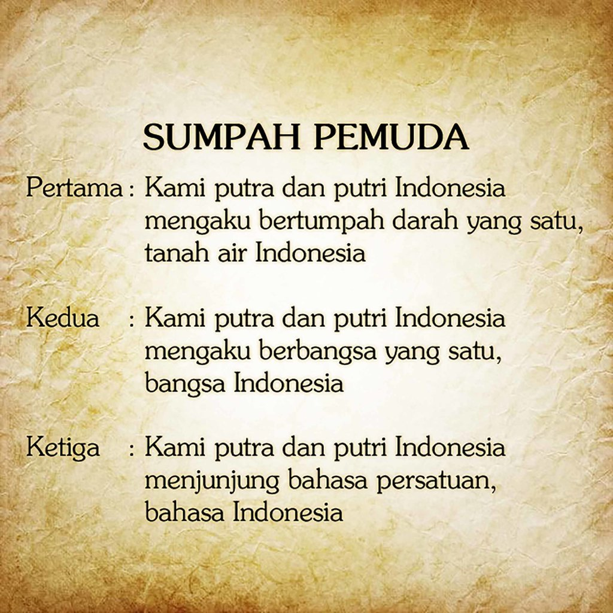

SUMPAH PEMUDA
Sumpah Pemuda adalah satu tonggak utama dalam sejarah pergerakan kemerdekaan Indonesia. Ikrar ini dianggap sebagai kristalisasi semangat untuk menegaskan cita-cita berdirinya negara Indonesia.
Apa itu Sumpah Pemuda
Sumpah Pemuda adalah salah satu peristiwa penting dalam sejarah Indonesia yang terjadi pada 28 Oktober 1928. Peristiwa ini merupakan momentum yang sangat berarti dalam perjuangan kemerdekaan Indonesia, karena melalui Sumpah Pemuda, terbentuklah semangat persatuan dan kesatuan bangsa Indonesia.
Pada tahun 1928, Indonesia masih berada di bawah kekuasaan kolonial Belanda. Pada tanggal 28 Oktober 1928, sekitar 100 pemuda dari berbagai organisasi pemuda di Jakarta, seperti Jong Java, Jong Sumatra, dan Jong Batak, berkumpul di Gedung Katholieke Jongenlingen Bond (KJB) di Jakarta. Mereka mengadakan Kongres Pemuda II, yang bertujuan untuk membahas dan menyampaikan aspirasi pergerakan pemuda Indonesia.
Pada Kongres Pemuda II inilah terjadi peristiwa penting yang kemudian dikenal dengan sebutan Sumpah Pemuda. Dalam sidang pleno yang dihadiri oleh para pemuda perwakilan dari seluruh Indonesia, disampaikan tiga butir sumpah yang kemudian menjadi semangat perjuangan bangsa Indonesia.
Isi dan Makna Sumpah Pemuda

ISI SUMPAH PEMUDA
1.Kami putra dan putri Indonesia, mengaku bertumpah darah yang satu, tanah air Indonesia.
Artinya: Kami, anak-anak Indonesia, bersumpah bahwa kami memiliki satu darah, yaitu darah Indonesia, dan bahwa kami berkomitmen untuk melindungi dan memperjuangkan tanah air Indonesia.
2.Kami putra dan putri Indonesia, mengaku berbangsa yang satu, bangsa Indonesia.
Artinya: Kami, anak-anak Indonesia, menyatakan bahwa kami adalah satu bangsa, yaitu bangsa Indonesia, dan bahwa kami bersatu untuk mencapai cita-cita bersama
3.Kami putra dan putri Indonesia, menjunjung bahasa persatuan, bahasa Indonesia.
Artinya: Kami, anak-anak Indonesia, berkomitmen untuk menggunakan bahasa Indonesia sebagai bahasa persatuan yang menyatukan kita semua.
MAKNA SUMPAH PEMUDA
Sumpah Pemuda menyatukan para pemuda dan seluruh rakyat Indonesia untuk membela tumpah darah yang satu, yakni tanah air Indonesia. Dari Sabang sampai Merauke, dari Miangas sampai Rote. Meskipun terdiri atas ribuan pulau yang dipisahkan oleh laut, tapi pada hakikatnya adalah satu.
Sumpah Pemuda menyatukan para pemuda dan seluruh rakyat Indonesia untuk menjadi bangsa yang berdaulat dan bersatu yaitu bangsa Indonesia. Sebagai bangsa yang besar dan majemuk, bangsa Indonesia telah melalui berbagai terpaan zaman melalui persatuan.
Sumpah Pemuda menyatukan para pemuda dan seluruh rakyat Indonesia untuk berbahasa satu, yakni bahasa Indonesia. Bahasa Indonesia menjadi bahasa yang mempersatukan suku ras, dan etnis yang berbeda tanpa menghapuskan bahasa ibu masing-masing. Bahasa Indonesia juga selalu berkembang melalui penyerapan kosakata dari bahasa-bahasa daerah yang memperkaya kosakatanya.
Kongres Sumpah pemuda 1
Rapat pertama dilaksanakan di Gedung Katholieke Jongenlingen Bond (KJB), Sabtu 27 Oktober 1928. Dalam rapat tersebut, Mohammad Yamin menguraikan tentang arti penting persatuan untuk kebangsaan. Menurutnya terdapat beberapa faktor yang bisa memperkuat persatuan Indonesia, yaitu persamaan kultur, bahasa, dan hukum adat.
Kongres Sumpah pemuda 2
Rapat kedua terjadi pada Minggu, 28 Oktober 1928 di Gedung Oost-Java Bioscoop membahas masalah pendidikan. Anak-anak harus dididik untuk memiliki karakter yang baik dan cinta tanah air. Anak-anak juga harus diberikan pelajaran merdeka tanpa melalui perintah ataupun pemaksaan. Harus ada keseimbangan antara pendidikan di sekolah dan di rumah.
Kongres Sumpah Pemuda 3
Rapat ketiga dilaksanakan di gedung Indonesische Clubgebouw Kramat pada tanggal 28 Oktober 1928. Pada rapat ketiga dijelaskan pentingnya gerakan kepanduan bagi persatuan bangsa. Kepanduan tidak bisa dipisahkan dari pergerakan nasional.
Dalam rapat ketiga ini, sebelum rumusan hasil kongres dibacakan, terlebih dahulu diperdengarkan lagu ciptaan Wage Rudolf Supratman, yakni Indonesia Raya yang nantinya akan menjadi lagu kebangsaan Indonesia setelah merdeka. Setelahnya, putusan kongres dibacakan dan diikuti oleh seluruh peserta, sebuah putusan yang kita kenal sebagai Sumpah Pemuda